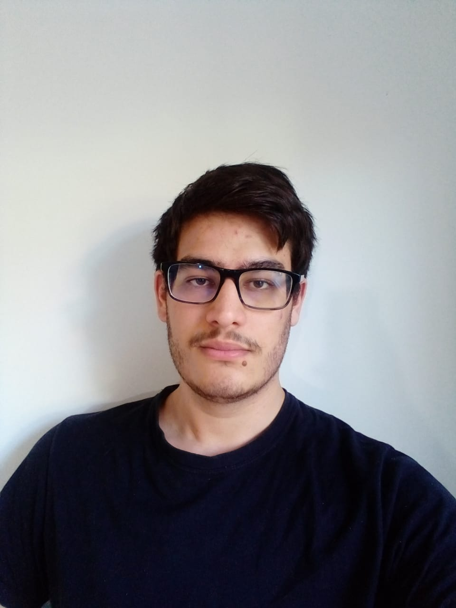

- Nascimento: 26 de Setembro de 2000 - 21 anos;
- Nascido e criado em Curitiba, Paraná, Brasil;
- Estudante;
Natã Abrahão Rodrigues
|
|
|
 |
Aos oito anos, comecei a praticar voleibol, o que levou aos meus 11 anos, quando entrei em um time local de Curitiba: AVP (Associação de Voleibol do Paraná). Nesse tempo em que participei do time, dos 11 aos 14 anos, conheci pessoas de gostos e características, dos mais variados. Aprendi a lidar com vitórias árduas assim como derrotas frustrantes; aprendi a lidar com a pressão de o resultado depender de você e mais ninguém; aprendi que o esforço e dedicação vale a pena no fim do dia e que nada disso é possível sem uma boa relação com sua equipe, tanto quem está ao seu lado, quanto quem está acima. Comunicação é essencial.
Começei o ensino médio fazendo o curso técnico integrado em Petróleo e Gás no SEPT-UFPR, poŕem a área não me chamou a atenção e eu mudei para o curso técnico em eletrônica na UTFPR (Universidade Tecnológica Federal do Paraná). A área de atuação me chamou a atenção, porém quando iniciei as aulas de programação meu olhos brilharam e eu decidi me aprofundar nisso e deixar de lado a eletrônica. Fiz a prova do Encceja para adiantar os estudos e participei do teste de seleção da Trybe. Adquiri conhecimento e algumas habilidades técnicas nas áreas de ambos os cursos técnicos em que eu estudei brevemente e , pelo alto nível de ensino e dificuldade, aprendi a pedir ajuda (algo que não era muito do meu perfil), a estudar sériamente (pois nunca precisei de fato estudar para ir bem na escola) e